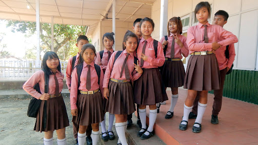

The Gap.

I was fortunate enough to have the freedom to try, fail, and try again, however millions of students from underprivileged backgrounds don't get the same resources and opportunities. While traditional government schools provide free education, children belonging to underprivileged communities face a gap in practical learning.
They may have the intelligence, ambition, and potential to become engineers, entrepreneurs, or innovators, but the resources that could help them discover that potential are often far beyond what their families can afford. That is the gap I want to fill.